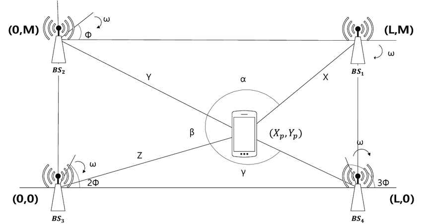
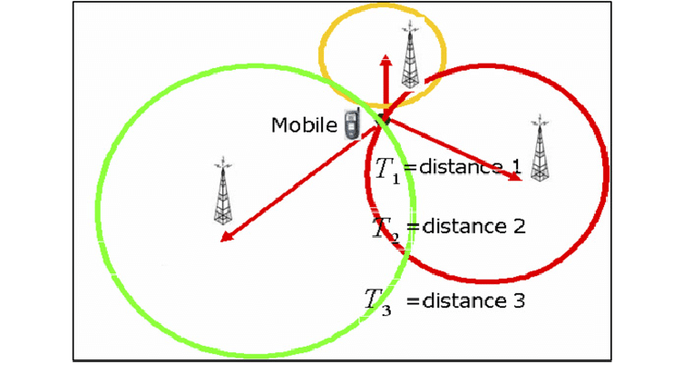
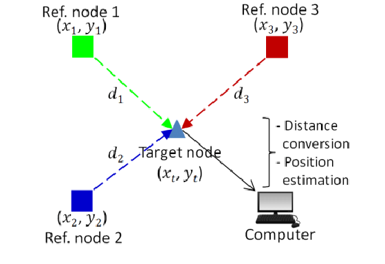

RTLS

- 2025 · 02 RTLS
RTLS, "Real-Time Location System" (Gerçek Zamanlı Konumlama Sistemi) anlamına gelir. Bu sistemler, bir nesnenin veya kişinin gerçek zamanlı konumunu izlemek ve belirlemek için kullanılır. RTLS, genellikle RFID (Radyo Frekansı ile Tanımlama), Wi-Fi, Bluetooth veya ultrasonik teknolojiler gibi çeşitli teknolojilerle çalışır.
RTLS, sağlık hizmetleri, lojistik, üretim, perakende ve güvenlik gibi birçok alanda kullanılır. Örneğin, hastanelerde RTLS, tıbbi ekipmanların ve hastaların konumunu izlemek için kullanılabilirken, lojistikte malzeme ve envanter takibi için faydalıdır. Bu sistemler, verimliliği artırmak, kayıpları azaltmak ve süreçleri optimize etmek amacıyla önemli bir rol oynar.
Kullanılan Teknolojileri
Bluetooth Düşük Enerji (BLE): BLE, özellikle yakın mesafelerde konum tespiti için kullanılır. Beacon adı verilen küçük cihazlar, belirli aralıklarla sinyal gönderir ve bu sinyaller, mobil cihazlar tarafından algılanarak konum belirlemede kullanılır.
Wi-Fi Tabanlı Konumlama: Wi-Fi ağları, cihazların konumunu belirlemek için kullanılabilir. Cihazın Wi-Fi sinyallerinin gücü (RSSI) ölçülerek, belirli bir alandaki konumu tahmin edilebilir.
RFID (Radyo Frekansı ile Tanımlama): RFID etiketleri, belirli bir alanda yerleştirilen okuyucular tarafından algılanarak konum bilgisi sağlar. Pasif RFID etiketleri, okuyucudan gelen sinyali kullanarak çalışırken, aktif etiketler kendi güç kaynaklarına sahiptir ve daha uzun mesafelerde çalışabilir.
Ultrasonik Konumlama: Ultrasonik sinyaller, ses dalgaları kullanarak konum tespiti yapar. Bu yöntem, genellikle yüksek hassasiyet gerektiren uygulamalarda tercih edilir.
İvmeölçer ve Jiroskop: Mobil cihazlarda bulunan bu sensörler, hareket ve yön bilgisi sağlayarak konum tespitine yardımcı olabilir. Bu yöntem, genellikle diğer yöntemlerle birleştirilerek kullanılır.
Görsel Konumlama: Kameralar ve görüntü işleme teknolojileri kullanarak, nesnelerin veya kişilerin konumunu belirlemek için kullanılabilir. Bu yöntem, özellikle iç mekanlarda etkili olabilir.
Hibrid Sistemler: Farklı teknolojilerin bir arada kullanılmasıyla oluşturulan sistemlerdir. Örneğin, Wi-Fi ve Bluetooth'un bir arada kullanılması, daha doğru ve güvenilir konum tespiti sağlayabilir.
Kullanılan Yöntemler
AoA (Angle of Arrival): Bir sinyalin geldiği açıyı ölçerek konum tespiti yapar. Bu yöntem, bir alıcının sinyalin geldiği açıyı belirlemesi için birden fazla anten kullanır. Antenler arasındaki faz farkları, sinyalin geldiği açıyı hesaplamak için kullanılır. AoA, özellikle yönlü antenlerin kullanıldığı uygulamalarda etkilidir ve genellikle daha az alıcı ile daha doğru konum tespiti sağlar.
- Antenlerin Yerleşimi: Birden fazla anten, belirli bir konumda yerleştirilir. Antenler arasındaki mesafe ve konum, hesaplamalar için önemlidir.
- Faz Farkı Ölçümü: Sinyal, antenlere ulaştığında, her antenin sinyaldeki faz farkı ölçülür. Bu faz farkları, sinyalin geldiği açıyı belirlemek için kullanılır.
- Açı Hesaplama: Faz farkları kullanılarak, sinyalin geldiği açı trigonometrik hesaplamalarla belirlenir. Örneğin, iki anten arasındaki faz farkı, sinyalin geldiği açıyı belirlemek için kullanılabilir.
- Konum Belirleme: Hesaplanan açı, antenlerin konumları ile birleştirilerek, sinyal kaynağının konumu belirlenir. Bu genellikle üçgenleme yöntemi ile yapılır.
TDoA (Time Difference of Arrival): Bir sinyalin farklı alıcılar tarafından algılanma zaman farkını kullanarak konum tespiti yapar. Bu yöntem, bir nesneden (örneğin, bir RFID etiketi veya bir mobil cihaz) gönderilen sinyalin, birden fazla alıcıya ulaşma zamanını ölçer. Alıcılar arasındaki zaman farkları kullanılarak, nesnenin konumu üçgenleme yöntemiyle belirlenir. TDoA, genellikle yüksek hassasiyet gerektiren uygulamalarda kullanılır.
- Alıcıların Yerleşimi: Birden fazla alıcı, belirli bir konumda yerleştirilir. Alıcılar arasındaki mesafe ve konum, hesaplamalar için önemlidir.
- Zaman Ölçümü: Sinyal, her alıcıya ulaştığında, alıcılar sinyalin geliş zamanını kaydeder. Bu zamanlar arasındaki farklar hesaplanır.
- Zaman Farklarının Hesaplanması: Her alıcı için, sinyalin geliş zamanı ile referans bir zaman arasındaki fark hesaplanır. Bu farklar, sinyalin kaynağının konumunu belirlemek için kullanılır.
- Hiperbolik Eşitlikler: Zaman farkları, alıcılar arasındaki mesafeleri belirlemek için kullanılır. Bu mesafeler, hiperbolik eşitlikler kullanılarak konum belirleme işlemi için birleştirilir. Her zaman farkı, bir hiperbol oluşturur ve bu hiperboler, sinyal kaynağının konumunu belirlemek için kesiştirilir.
RSSI (Received Signal Strength Indicator): Alıcıya ulaşan sinyalin gücünü ölçerek, nesnenin konumunu tahmin etmeye çalışır. Genellikle daha az hassas bir yöntemdir, ancak basit uygulamalar için yeterli olabilir.
- Sinyal Gücünün Ölçülmesi: Alıcı, belirli bir frekansta gelen sinyalin gücünü ölçer. Bu ölçüm genellikle desibel (dBm) cinsinden ifade edilir. Örneğin, -30 dBm, çok güçlü bir sinyal iken, -90 dBm zayıf bir sinyali temsil eder.
- Sinyal Gücü ile Mesafe İlişkisi: RSSI değeri, sinyal kaynağı ile alıcı arasındaki mesafeye bağlıdır. Genellikle, sinyal gücü mesafe ile ters orantılı olarak azalır. Bu ilişki, logaritmik bir modelle ifade edilebilir. Örneğin, bir sinyalin gücü her 6 dB azaldığında, mesafenin yaklaşık iki katına çıktığı kabul edilir.
- Hesaplama Modeli: RSSI değerini mesafeye dönüştürmek için genellikle bir model kullanılır. En yaygın kullanılan model, "Path Loss Model" (Yol Kaybı Modeli) olarak bilinir. Bu model, belirli bir ortamda (örneğin, iç mekan veya dış mekan) sinyal kaybını tahmin etmek için kullanılır.
FDoA (Frequency Difference of Arrival): Bu yöntem, sinyalin frekansındaki değişiklikleri kullanarak konum tespiti yapar. Farklı alıcılara ulaşan sinyallerin frekans farkları, nesnenin konumunu belirlemek için kullanılır.
Dead Reckoning: Bu yöntem, bir nesnenin başlangıç konumunu ve hareket yönünü kullanarak mevcut konumunu tahmin eder. Genellikle ivmeölçer ve jiroskop gibi sensörlerle desteklenir.
Hybrid Sistemler: TDoA, AoA ve diğer yöntemlerin bir arada kullanıldığı sistemlerdir. Bu tür sistemler, farklı yöntemlerin avantajlarını birleştirerek daha doğru ve güvenilir konum tespiti sağlar.